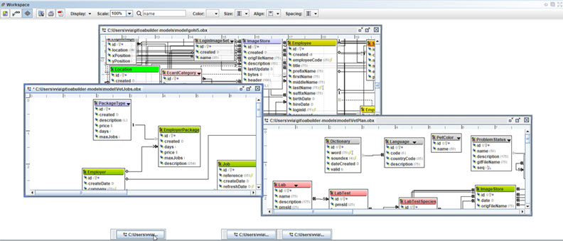
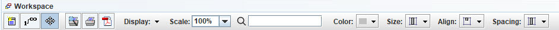
Workspace toolbar.
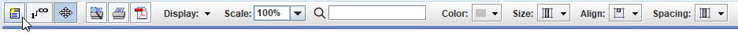
Add a new Object/Class/Entity to the Model.
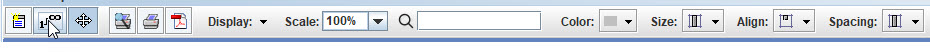
Link Objects together.
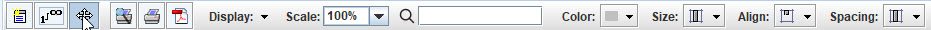
Mouse drag mode, either rubber-band or mouse drag.
Click and hold mouse button down while moving the mouse.
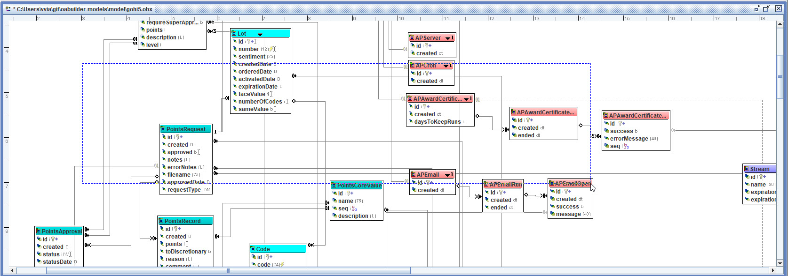
Showing rubberband selection.
Select mutlple objects. Also supports [ctr]+[click].
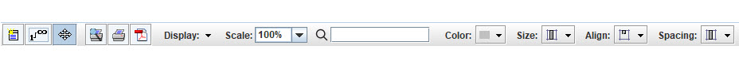
Print buttons. Printout creates multiple page diagram that matches model, that can be fitted together.
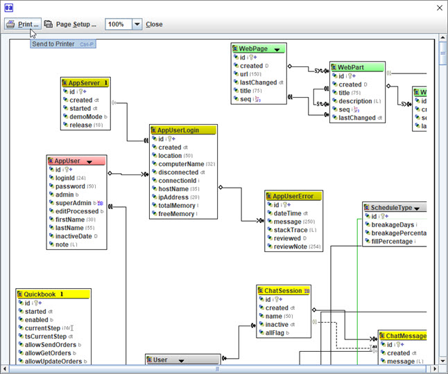
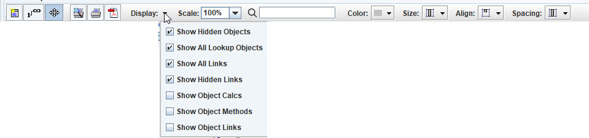
Display options.
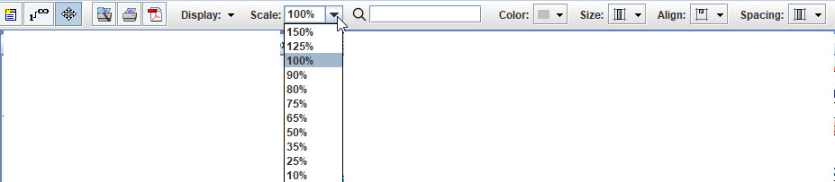
Scale the model
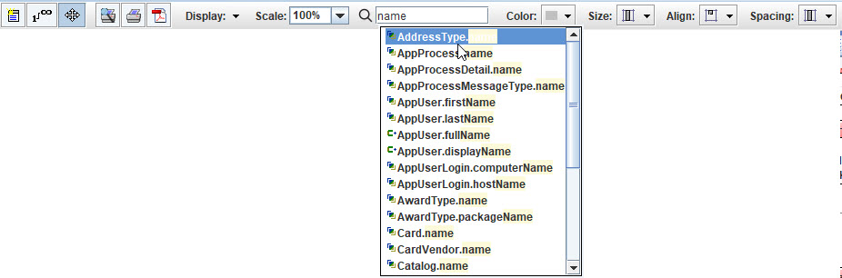
Find, autocomplete searching.
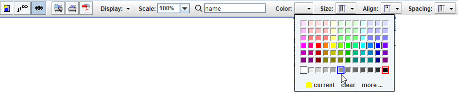
Choose color for the selected Object(s).
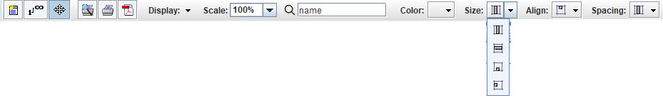
Object Sizing. (See model size options)
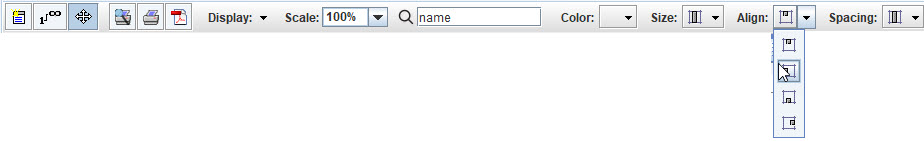
Object aligning.
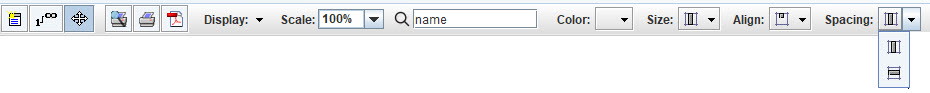
Object spacing.
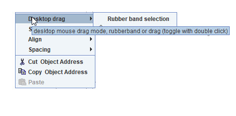
Workspace, right click menu.
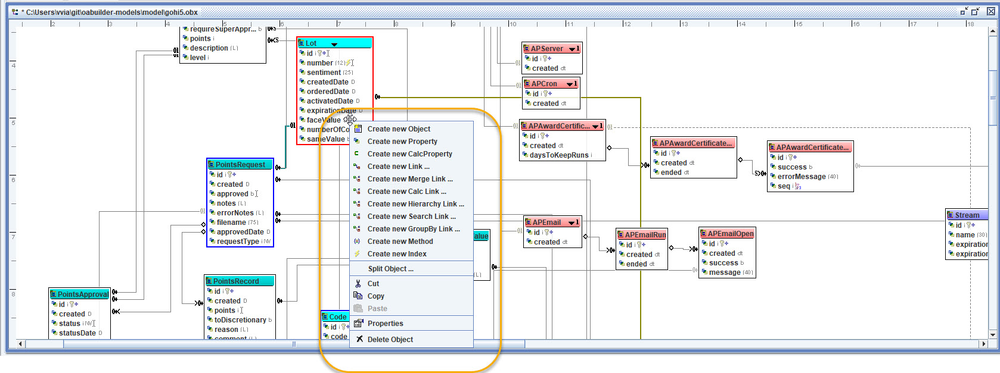
Object, right click menu.
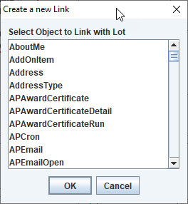
Object menu "Create New Link".
Object menu "Create Merger Link".
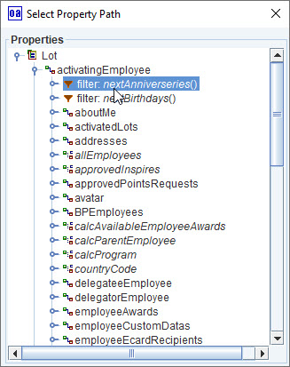
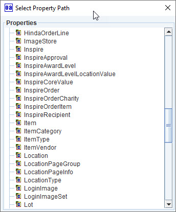
Object menu "Create Calculated Link".
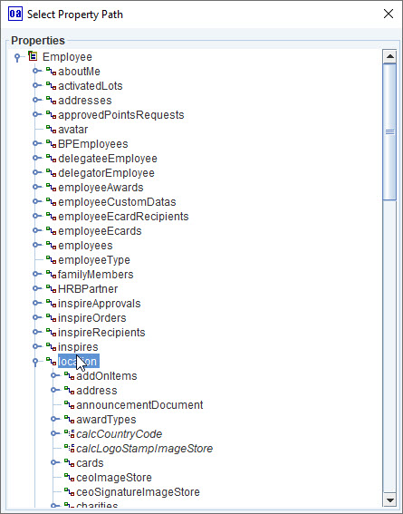
Object menu "Create Hierarchy Link".
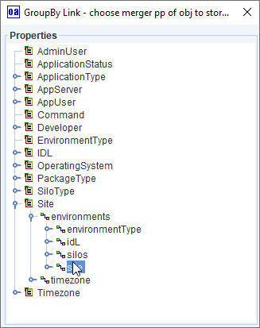
Object menu "Create Group By Link" (two steps).
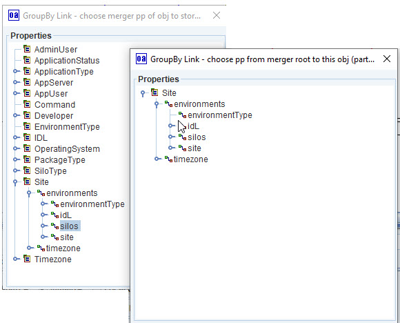
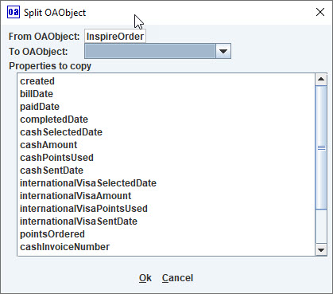
Object menu "Split Object", move properties from the selected object to another object.